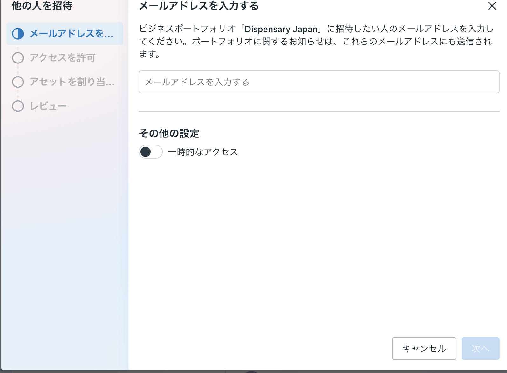

2026-06-21 ／ いま残っているお願いを、なぜやるかと一緒に整理しました
終わった決定は「決定済み」に圧縮。サイトはもう公開済みなので、ここからは「より伝わる」ための仕上げを、効く順に。全部すぐでなくて大丈夫です
固まったことです。認識違いがあればここだけ指摘してください。※印は骨子は確定・細部だけ調整中。
来てくれた人を取りこぼさず、体験申込まで運ぶ。
どこで人が止まっているかが見えないと、直す場所が分かりません。
レオナさんが体を整えるとき、まず今の状態（体重・体組成）を測りますよね。測らないと効いているか分からない。発信もまったく同じです。「投稿を何人が見た→何人がプロフィールに来た→何人がリンクを押した→何人がLINEに入った→何人が申し込んだ」のどこで抜けているかが見えて初めて、直す一点が分かります。
発信はファネルの一番上。ここはレオナさんの主戦場です。
サイトはもう公開済み（人が見れる状態）です。今は仮の写真と汎用的な文章なので、ここを差し替えると訴求がぐっと強くなります。本人にしか出せない部分なので、できる所から大丈夫です。
中身が決まると、価格（特に上位コース）が確定します。
決め切れていない小さな分かれ道。サクッと方向だけ。
柱2-α の手順です。パスワードは渡さず、5分ほどで終わります。
Instagramには「人間以外が操作していないか」を見張る門番がいます。AIや自動ツールでアカウントを動かすと、偽物と判断されてアカウントごと消されることがあります。だから運用は人間がやり、AIにアカウントを操作させることは一切しません。お店に「人のふりをしたロボット」を立たせたら追い出される、のと同じです。
さらに、パスワードを共有して別端末から入ると、Instagram自身の「不審なログイン」検知でかえってロックされることがあります。正式な権限付与なら、相手は自分のアカウントで入るのでパスワードは渡らず、より安全です。
※事前にInstagramがMeta Business Suiteに連携されている必要があります（［設定］→［Instagramアカウント］で確認）。ボタン名は更新で少し変わることがあります。迷ったら画面共有で一緒に進めます。
